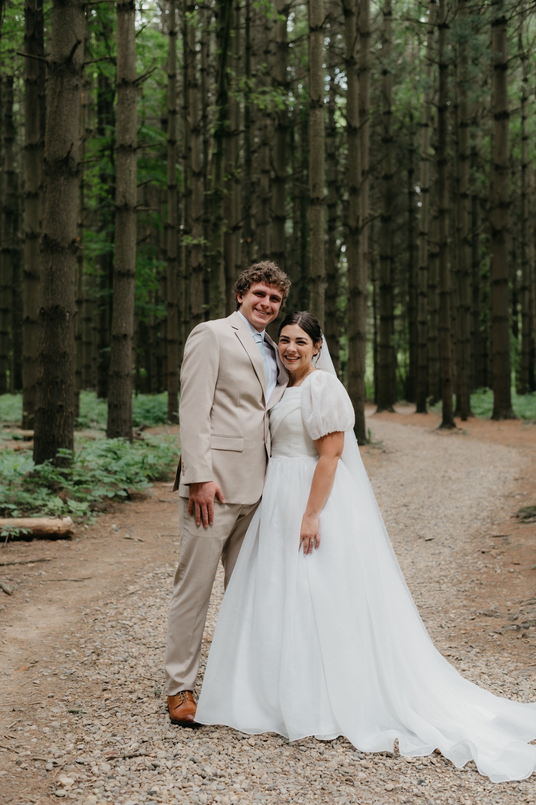

About Me

I am a self-motivated and driven individual who values family, teamwork, and strong personal connections. I completed my AA from Columbia Basin College while still in high school. Afterward, I took a gap year to engage in personal growth by attending Legacy Bible Institute, which led to an incredible opportunity to work with 1,400 youth at Life Song for Orphans in Zambia.
I am currently pursuing a Computer Science degree as a senior at Washington State University and am actively seeking a local internship to gain practical experience in the field of computer science.
My Tech Stack
Achievements, Certifications & Activities
- CompTIA Security+ Certified
- Presidential Scholarship - Washington State University
- Coding Cougs Member
Connect with Me
Classwork Repository – Welcome! This repository is a collection of my programming class assignments, notes, and practice projects. It's a record of my progress as I learn to code, improve my problem-solving skills, and explore different areas of computer science.
About This Repository
- Systems Programming – C and C++, memory management, file systems
- Computer Architecture & Assembly – x86 Assembly, stack frames, registers
- Cybersecurity – Buffer overflows, SQL injection, XSS, use-after-free bugs
- Cryptography – Hashing, encryption, PKI, digital signatures, classical ciphers
- Quantum Cryptography – Entanglement, Superposition, BB84, E91 protocols
- Functional Programming – Lisp, Standard ML, recursion, immutability
- Data Structures & Algorithms – Lists, trees, sorting, searching, complexity
- Automata Theory – Finite automata, regex, Turing machines
Coding Language Experience
- C & C++: Systems-level work, memory management, performance
- Assembly (MIPS/x86): Memory layout, calling conventions
- Standard ML & Lisp: Functional programming & recursion
- Python: Scripting and prototyping
- Bash: Unix/Linux scripting and automation